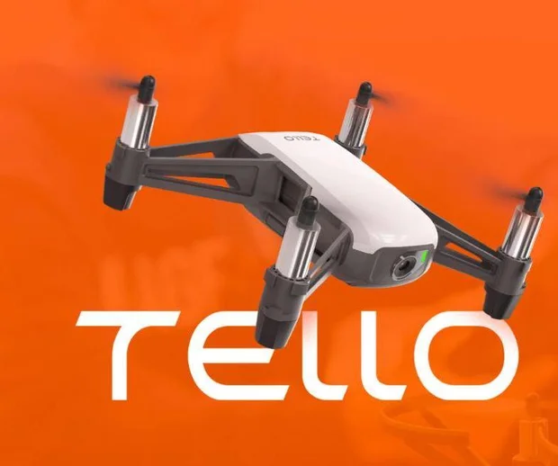

Software Progress
Stage 1
Research and learn more about DJI TelloPy drone control library.
DJITelloPy: https://github.com/damiafuentes/DJITelloPyStage 2
Used PyGame and cv2 python libraries to implement navigation on the drone as a prooof of concept.
CV2: https://github.com/opencv/opencvPyGame: https://github.com/pygame/pygame